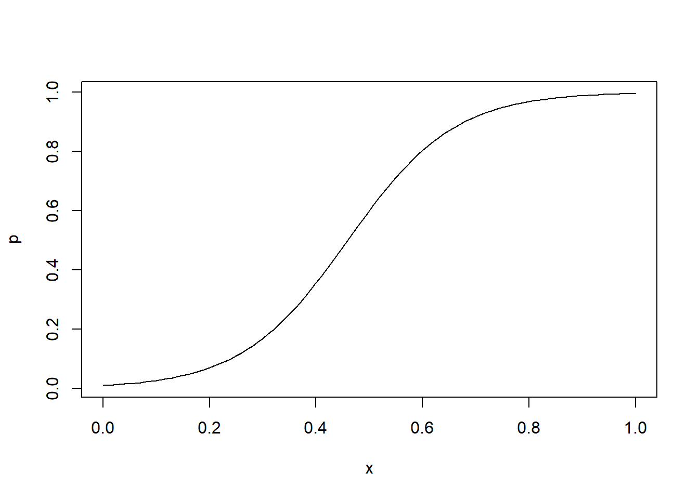
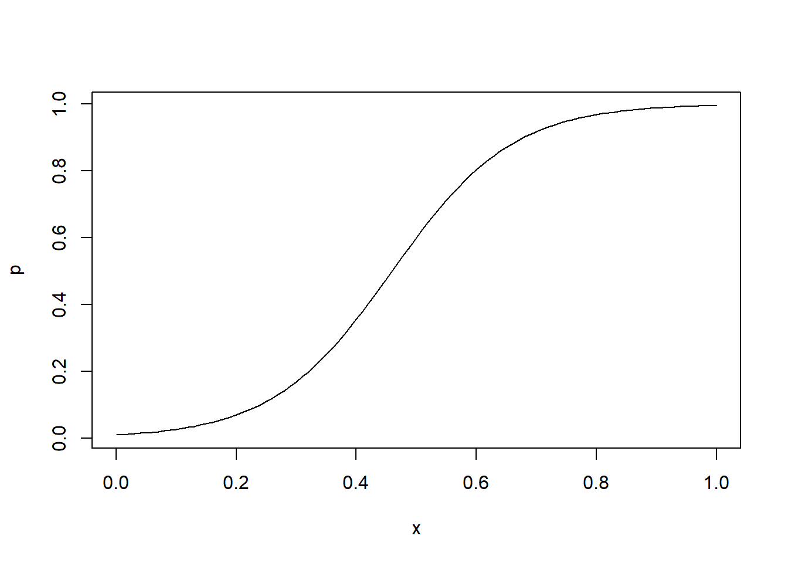
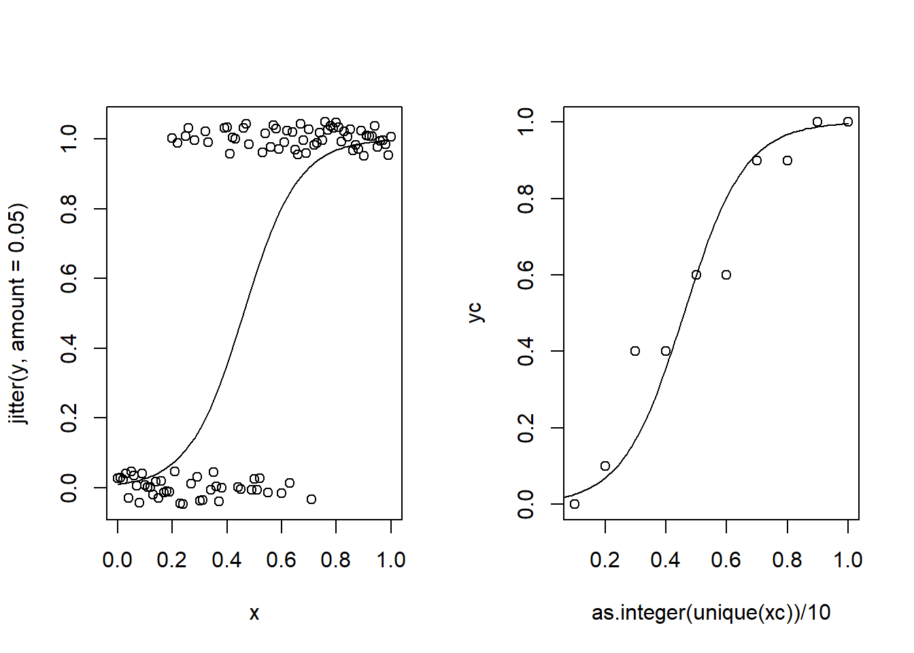

b0 <- qlogis(0.01) # probability of success when x = 0, in the link function space
b1 <- 10 # increase in the log odds of success for a unit increase in x
x <- seq(0, 1, 0.01) # x values
p <- plogis(b0 + b1 * x)
plot(x, p, type = "l")
This document present a general workflow to simulate data for a binomial generalized linear model. This simulation is similar to what is presented in the paper for the special case of an ordinal regression.
The general formula for a binomial GLM is presented in Equation 1. Where \(g^{-1}(\cdot)\) is the inverse of the link function. In the case of a binomial regression with a logit link function \(g(p) = \text{logit}(p) = log(\frac{p}{1 - p})\) and \(g^{-1}[logit(p)] = \text{invlogit}(p) = \frac{e^p}{1 + e^p}\).
\[ P(Y = 1|\mathbf{X}) = g^{-1}(\mathbf{X} \boldsymbol{\beta}) \tag{1}\]
The linear combination of parameters \(\eta = \mathbf{X} \boldsymbol{\beta}\) define the true probabilities. Then the random part of the model (in this case a logistic distribution) define the random variability around the true values. To make an example, let’s assume to predict \(P(Y = 1)\) with a numerical variable \(x\) coming from an uniform distribution \(x \sim \mathcal{U}(0, 1)\). As in standard regression we have two parameters:
Thus we can choose two values for the parameters and plot the true relationship between \(x\) and \(P(Y = 1)\). The link function is qlogis() and the inverse of the link function is plogis(). Parameters are expressed in the scale of the of the link function.
b0 <- qlogis(0.01) # probability of success when x = 0, in the link function space
b1 <- 10 # increase in the log odds of success for a unit increase in x
x <- seq(0, 1, 0.01) # x values
p <- plogis(b0 + b1 * x)
plot(x, p, type = "l")
The curve depict the true probability of success for each value of \(x\). To include the random error we need to sample the observed values from a Binomial distribution using the vector of probabilities p. We sample a vector of 0 and 1.
ns <- length(x) # number of subjects
y <- rbinom(ns, 1, p)
head(y)[1] 0 0 0 0 0 0par(mfrow = c(1,2))
# binary values
plot(x, jitter(y, amount = 0.05))
lines(x, p)
# grouped values
xc <- cut(x, seq(0, 1, 0.1), include.lowest = TRUE)
yc <- tapply(y, xc, mean)
plot(as.integer(unique(xc))/10, yc)
lines(x, p)
In practical terms, the \(\eta\) define the true probability of success for each observation (i.e., combination of predictors \(\mathbf{X}\)) and then the random part is introduced by sampling from the assumed probability distribution.
Then we can fit the logistic regression using glm() and we should recover the simulation parameters. Increasing the number of trials/observations will reduce the distance between the simulated the true values.
dat <- data.frame(x, y)
fit <- glm(y ~ x, data = dat, family = binomial(link = "logit"))
summary(fit)
Call:
glm(formula = y ~ x, family = binomial(link = "logit"), data = dat)
Coefficients:
Estimate Std. Error z value Pr(>|z|)
(Intercept) -3.2148 0.6829 -4.707 2.51e-06 ***
x 7.8145 1.4573 5.362 8.22e-08 ***
---
Signif. codes: 0 '***' 0.001 '**' 0.01 '*' 0.05 '.' 0.1 ' ' 1
(Dispersion parameter for binomial family taken to be 1)
Null deviance: 137.141 on 100 degrees of freedom
Residual deviance: 77.449 on 99 degrees of freedom
AIC: 81.449
Number of Fisher Scoring iterations: 5# model
coef(fit)(Intercept) x
-3.214754 7.814515 # truth
c(b0 = b0, b1 = b1) b0 b1
-4.59512 10.00000 Changing \(\beta_0\) will affect the lower bound of the sigmoid curve while \(\beta_1\) determine the slope of the function. Figure 1 depicts logistic curves with different parameters.
This method is implemented in the paper when sampling from a categorical distribution. In the case of ordinal data we need \(k - 1\) equations where \(k\) is the number of ordered categories.